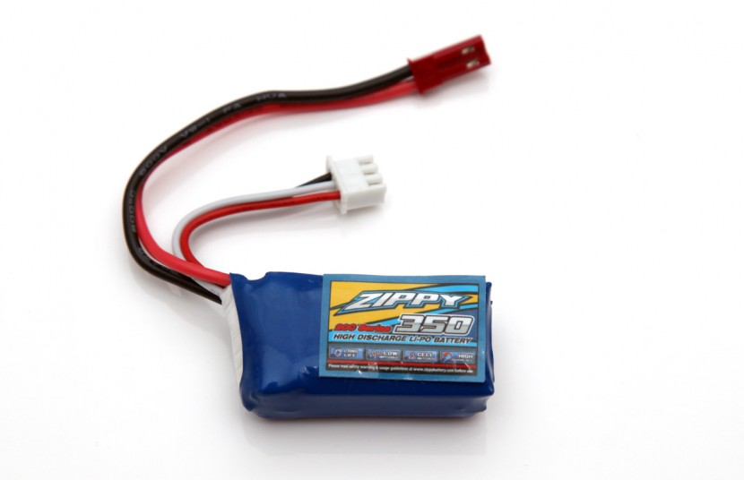

By Vijay Sharma
LiPo batteries (short for Lithium Polymer) are a type of rechargeable battery that has taken the electric RC world by storm, especially for planes, helicopters. RC LiPo batteries have high discharge rates to power the most demanding electric motors.
LiPo battery cells are rated at 3.7 volts per cell. S indicated on a battery represents how many cells are connected in series. P indicated on a battery represents how many cells are connected in parallel. In case of a series connection, higher voltage can be harnessed whereas in parallel arrangement, capacity will be higher. Thus, a 2S2P would indicate two, two celled series packs hooked up in parallel to double the capacity.
Capacity indicates how much power a battery pack can hold and is expressed in milliamp hours ( mAh ) units. This is just a fancy way of saying how much load or drain (measured in milliamps) can be put on the battery for 1 hour at which time the battery will be fully discharged. The main thing to get out of this is if you want more flight time; increase the capacity of your battery pack. Unlike voltage, capacity can be changed around to give you more or less flight time.
Discharge rate is simply how fast a battery can be discharged safely.RC LiPo battery world it is called the “C” rating. Using our 1000 mAh battery as an example; if it has a 20C discharge rating, that would mean you could pull a maximum sustained load up to 20,000 milliamps or 20 amps off that battery (20 x 1000 milliamps = 20,000 milliamps or 20 amps). Most RC LiPo Battery packs will show the continuous C rating and usually a maximum burst C rating as well. A burst rating indicates the battery discharge rate for short bursts (a few seconds maximum) of extended power. An example might be something like “Discharge rate = 25C Continuous/50C Bursts”. The higher the C rating, usually the more expensive and even slight heavier the battery gets. This is where you can save some money, and maybe even a little weight. Getting an extremely high discharge rated pack when there is no way you could possibly pull the full amount of power is not required but it won’t hurt either. The most important thing is you can’t go with too low a discharge C rating or you will damage your battery and possibly your ESC (electronic speed control). A very good rule to follow here is the “80% rule”. This simply means that you should never discharge a LiPo pack down past 80% of it’s CAPACITY to be safe. An 80% discharged LiPo cell, will give an approximate open circuit voltage of about 3.72 to 3.74 volts.
A 3.7 volt RC LiPo battery cell is 100% charged when it reaches 4.2 volts. Charging it past that will ruin the battery cell and possibly cause it to catch fire. LiPo Battery Charging Current : Never charge a LiPo or LiIon pack greater than 1 times its capacity (1C)
Well what would happen if one of those three cells is charging a bit faster than the other two? There could be two cells at only 4.1 volts and the one that is charging at bit faster could be getting overcharged up to 4.4 volts before the charger stops charging at 12.6 volts. That would certainly cause damage to that one cell, perhaps even a fire. Lipo’s can be balanced while charging the pack through the balance plug with a balancing charger. This method uses the charger to individually charge each cell and ensure the voltages are the same in each cell as they charge.